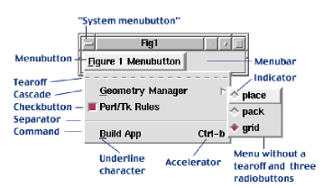
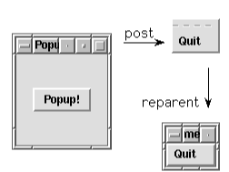
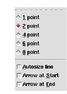
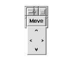
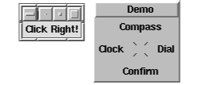
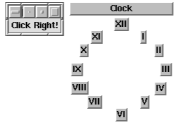

Whether they drop down as rectangles or pop up as pies, menus are widgets that manage bundles of related information. Menus are pervasive, appearing in nearly every graphical application. In this article we'll examine pulldown and popup menus, Tk 4 and Tk 8 style menubars, and finally, peek into the future and see one way menus might evolve.
Several years ago, Unix-only Tk 4 evolved into Tk 8, adding support for Windows and the Macintosh. The Tk team seized this opportunity to improve their menu design, by simplifying menus and unifying their management across the three operating systems. (Note that Tcl/Tk runs on Macs, but Perl/Tk doesn't. And by the way, there wasn't a Tk 5, 6, or 7: the jump was to synchronize Tk's number scheme with Tcl's.)
There's still a lot of Tk 4 code out there, so it's helpful to be familiar with both Tk 4 and Tk 8 menus. Indeed, most menu code is Tk 4 style, simply because it has been around the longest and works just fine in Tk 8.
If you're still using Tk 4, that's okay for the short term. But you miss out on the new features and widgets, and, most importantly, support and bug fixes. You also can't run some of the demonstration code that goes with this article.
You probably know how menus behave. In Tk lingo, menus are widgets containing one or more menu items. A menu remains hidden until it is "posted", usually by clicking a menubutton, and then the menu's items are displayed, vertically, in a rectangular window. Once a menu item is selected, the menu is unposted. Figure 1 shows a menubutton, two menus, and the six different Tk menu items (described shortly). Most applications have several menubuttons arranged in a row across the top of their main window, packaged in a construct termed a menubar. In Tk 4 a menubar is a frame widget filled with menubutton widgets, but in Tk 8 a menubar is a special menu widget filled with "cascade" menu items. We'll explore menubars in detail later.
In addition to cascades, there are five other menu items: command, checkbutton, radiobutton, separator, and tearoff, all shown in Figure 1. Except for separators and tearoffs, these items are composed of two fields each, a label and an accelerator. The label is usually a text string (but might be an image) that identifies what the menu item does. The optional accelerator activates a menu item with a keyboard shortcut rather than the mouse. We'll talk about the various menu items in detail shortly, but first, some brief descriptions.

Figure 1
The most common menu item, command, emulates a button widget because it executes a command (Tk callback) when clicked.
Checkbutton and radiobutton menu items resemble their widget counterparts: Checkbuttons are either on or off, while radiobuttons choose one item from several alternatives. Both of these menu item types can invoke a callback and modify a Perl variable. A cascade menu item posts a sub-menu that contains further menu items. Cascaded menus can contain more cascaded menus. We'll examine cascade menu items in the discussion on menubars.
A separator menu item is simply a thin horizontal line used to divide a menu into logical partitions.
The special tearoff menu item is a dashed line that, when clicked, reparents the menu inside its own decorative window manager border. The torn-off menu then remains permanently posted until destroyed by a window manager action. These window manager actions are often command menu items activated by clicking the top-left corner of the window manager's border, sometimes called the System Menubutton. A tearoff menu item is optional, but, when present, is always the first menu item. In Figure 1 notice that the "Geometry Manager" cascade menu has no tearoff.
Finally, there are times when we need to refer to an individual menu item. We refer to a menu's items with an index, which can be an integer, a Y-pixel coordinate relative to the menu's top left corner, a string to match against menu item labels, or a special identifier: "active", "last", or "none".
Assuming $mw is our MainWindow, we can create a mostly-empty menu like this:
my $popup_menu = $mw->Menu;
This menu isn't completely empty because it has a tearoff menu item, and the tearoff's menu index is zero. If we add -tearoff => 'no' to the menu creation command, then menu index zero is assigned to the first menu item we create. This menu is also invisible, and can't be managed in the normal fashion with a geometry manager like place(), pack(), or grid(). Menus can only be posted by pressing a menubutton (or cascade), or by manually calling the post() or Popup() method. To make this menu useful, let's add its second menu item, a command:
$popup_menu->command(-label => 'Quit',
-command => \&exit);

Figure 2
Menu widgets have methods to create the various menu item types like command(). The separator() method drew the thin horizontal line seen in Figure 1. We'll visit the remaining items types in later sections.
Now let's create a button whose callback posts the menu (the complete program, popup1, is on the TPJ web site):
my $b = $mw->Button(-text => 'Popup!')->grid;
$b->configure(-command => sub {
$popup_menu->post(500, 500)
});
Running popup1 produces the window on the left half of Figure 2. Pressing the button invokes the post() method, and a naked menu appears at screen coordinates (500, 500), with dashed-tearoff and Quit-command items. Pressing the tearoff reparents the menu. Now we can treat the menu as a toplevel, move it around, make menu selections, iconify it, or whatever we like. One problem with the post() method is the need to specify where the menu is to appear. Placing it arbitrarily means that it often won't be near the cursor. That's not very user friendly. Menubuttons conveniently arrange for their menu to pop up right next to the cursor. Since a popup has no associated menubutton, we can use the Popup() method instead, as in the popup2 program:
$b->configure(-command => sub {
$popup_menu->Popup(qw/-popover cursor/);
});
When this menu is posted, it's aligned so its north edge touches the cursor -- the contact point is known as the popanchor position. With -popanchor => 'n' (the default value) the menu lies below the cursor. Similarly, with -popanchor => 's' the menu lies above the cursor. All eight cardinal compass directions are legal popanchor values: n, ne, e, se, s, sw, w, nw, as well as c (for center).
Menus don't have to appear above the cursor. They can also pop over other widgets (you provide the widget reference), or even over the root window itself (you provide undef). When a menu pops over something, it can be aligned on any of the standard eight compass points (and center) along the widget's border. This is known as the overanchor position. With -overanchor => 'w', the menu appears on the widget's left edge, and -overanchor => 'e' makes the menu appear on the right edge. Combine -overanchor with -popanchor for fine -grained menu placement.
The Popup() method also works with toplevel widgets. A nice popup demonstration is included with the Perl/Tk distribution, and is on the TPJ web site as ptk-popup.

Figure 3
Figure 3 shows radio-button and checkbutton menu items -- the checkbuttons are in the lower half of the menu. Both menu items have an indicator on their left that advertises whether they are on or off. A checkbutton's state (whether it's selected or not) is stored in a Perl scalar. Here's a typical checkbutton creation command:
$menu->checkbutton(-label => 'Autosize line',
-variable => \$autosize,
-onvalue => 1, -offvalue => 0,
-underline => 0, -command => \&line);
So Tk sets $autosize to 1 whenever the item is selected, and 0 when it's deselected. The reverse is true as well -- changing the variable to 0 or 1 changes the indicator. Also, the character at label position zero is underlined, and the subroutine &line is called whenever there's a state change.
Radiobuttons select a single item from a list of related items. (If you have a one item list, just use a checkbutton.) Each radiobutton in a group uses the same Perl scalar to store its value, like this:
$menu->radiobutton(-label => '1 point',
-variable => \$point, -value => 1,
-underline => 0, -command => \&point);
$menu->radiobutton(-label => '2 point',
-variable => \$point, -value => 2,
-underline => 0, -command => \&point);
The scalar $point takes on one of several point sizes as the radiobutton indicators are clicked. And like checkbuttons, changing the variable's value changes the Tk indicator, and invokes a callback.
Many Perl/Tk programs manually build their menubars by packing menubuttons into a frame. Some buttons are left-justified, some are right-justified. The following statements are from program menubar1, and produce a menubar identical to what you see in Figure 4.
my $mw = MainWindow->new;
$mw->geometry('300x50');
my $menubar = $mw->Frame(qw/-relief raised -borderwidth 2/);
$menubar->pack(qw/-fill x/);
my $file = $menubar->Menubutton(qw/-text File-underline 0/);
my $cas1 = $menubar->Menubutton(qw/-text Cascades-underline 3/);
my $help = $menubar->Menubutton(qw/-text Help -underline 0/);
$file->pack(qw/-side left/);
$cas1->pack(qw/-side left/);
$help->pack(qw/-side right/);
Thus far I've intentionally avoided cascades; it's time to remedy that situation by adding one (keep Figure 4 in mind). I've found that almost no one grasps how to make multi-level cascades, mainly because the sub-menu creation is so obscure.
my $cas2 = $cas1->cascade(-label => "Cascade Level 2"); $cas1->command(-label => 'Level 1');
Figure 4
The Cascades menu now has three menu items, a tearoff, a cascade and a command. The cascade item Cascade level 2 needs its sub-menu created, but the sub-menu must be a child of the Cascades menu. The following code fetches the menu reference for the parent menu, creates the sub-menu, and then configures the new cascade.
my $cas1_menu = $cas1->cget(-menu);
my $cas2_menu = $cas1_menu->Menu;
$cas1->entryconfigure('Cascade Level 2', -menu => $cas2_menu);
$cas2->command(-label => 'Level 2',
-command => sub {print "Level 2\n"});
That's a lot of work, and we won't go any further with this Tk 4 idiom. Much has changed, as we'll see.
When menubars were revamped in Tk 8 to support Macintosh and Win32 operating systems, they became even easier to use. For instance, a menu widget can be attached to any mainwindow or toplevel, and act as a menubar. This means we don't have to generate our own menubar from a frame and menubuttons. Nor do we have to worry about their geometry management. Menubuttons are now superfluous -- cascades take their place. The menu manager also looks for menu labels, like Help on Unix and System on Win32, and handles them specially. The manager also ensures that the appearance and behavior of the menubar adheres to the user interface guidelines of the running operating system. The following program, menubar2, a Tk 8 version of menubar1, produced the display shown in Figure 4. The program speaks for itself:
#!/usr/local/bin/perl -w
#
# menubar2 - create a menubar in the modern Tk 8 style.
use Tk 8.0;
use strict;
# Create the MainWindow (or Toplevel) with a
# menubar attached to it. Think of the menubar
# as a menu widget that's always posted, with its
# cascade menu items displayed left to right
# (and without adornments like indicators and
# accelerators), instead of vertically, top to bottom.
my $mw = MainWindow->new;
$mw->geometry('300x50');
my $menubar = $mw->Menu;
$mw->configure(-menu => $menubar);
# Create the pseudo-menubuttons, which are actually
# cascade menu items. Since cascades post menus,
# why bother with menubuttons? Note that the
# cascade's menu widget is automatically created.
# Also note the use of the ~ character to specify the
# underline character, which is certainly easier than
# counting and specifying -underline. On Unix the
# "Help" cascade is automatically right
# justified in the menubar, freeing us of the task.
# For both Unix and Win32, a separator menu item right
# justifies all following cascades in the menubar.
my $file = $menubar->cascade(-label => '~File');
my $cas1 = $menubar->cascade(-label => 'Cas~cades');
my $help = $menubar->cascade(-label => '~Help');
# Create the menu items for each menu.
# First, the File menu item.
$file->command(-label => "Quit!", -command => \&exit);
# Creating multi-level cascades in Tk 4 is a royal pain,
# but in Tk 8 it's a piece of cake - all sub-menus are
# created automatically!
my $cas2 = $cas1->cascade(-label => "Cascade Level 2");;
my $cas3 = $cas2->cascade(-label => 'Cascade Level 3');
my $cas4 = $cas3->cascade(-label => 'Cascade Level 4');
$cas1->command(-label => 'Level 1',
-command => sub {print "Level 1\n"});
$cas2->command(-label => 'Level 2',
-command => sub {print "Level 2\n"});
$cas3->command(-label => 'Level 3',
-command => sub {print "Level 3\n"});
$cas4->command(-label => 'Level 4',
-command => sub {print "Level 4\n"});
# Finally, the Help menu items.
$help->command(-label => 'Version',
-command => sub {print "Version\n"});
$help->separator;
$help->command(-label => 'About',
-command => sub {print "About\n"});
# In Tk 8 whenever the cursor passes over the menubar,
# virtual events are generated. The
# following callback tells us which menubar cascade we're
# in by querying the event and looking for the active menu
# item. The special variable $Tk::event is a localized
# reference to the X11 event structure - the same thing
# returned by a call to XEvent(). Its W() method reports
# the window (actually, widget reference) that the event
# occurred in, the menubar in this case. The menu method
# entrycget() returns the -label attribute of the active
# menu item, which is then printed. The Tk::catch construct
# catches errors and throws them away.
$menubar->bind('<<MenuSelect>' => sub {
my $label = undef;
my $w = $Tk::event->W;
Tk::catch {$label = $w->entrycget('active', -label)};
print "$label!\n" if defined $label;
});
if ($^O eq 'MSWin32') {
# For Win32, add some special System menu items.
# The System menu is similar to Unix window manager
# controls, and is activated by clicking the icon at
# the upper left corner of the window.
my $syst = $menubar->cascade(-label => '~System',
-tearoff => 0);
$syst->separator;
$syst->command(-label => "System Menu Item 1",
-command => sub {$mw->bell});
$syst->command(-label => "System Menu Item 2",
-command => sub {$mw->bell});
}
MainLoop;
Menu (and menubutton) widgets accept a -menuitems parameter, a list of lists that defines all the menu items comprising a menu. Each inner list describes a single menu item, like this Exit command item:
my $mi = [ ['command' => 'E~xit', -command => \&exit] ]; my $menu = $mw->Menu(-menuitems => $mi);

Figure 5
Program menuitems2 uses a data structure like this to create Figure 3. Menus can be
broken into multiple columns. If a menu item's -columnbreak attribute is true, it
begins a new column (columns read left to right). Typically, multicolumn menus also set -hidemargin
to true.
Figure 5 was created
by this code (program colbreak):
my $mw = MainWindow->new;
my $move = $mw->Menubutton(qw/-text Move/)->grid;
$move->configure(-menu => $move->Menu(-tearoff => 0));
my(@hm) = qw/-hidemargin 1/;
my(@cb) = qw/-columnbreak 1/;
$move->command(@hm,-label => " ", -state => 'disabled');
$move->command(@hm, -label => "<",
-command => sub {print "left\n"});
$move->command(@hm, -label => " ", -state => 'disabled');
$move->command(@hm, @cb, -label => "^",
-command => sub {print "up\n"});
$move->command(@hm, -label => " ", -state => 'disabled');
$move->command(@hm, -label => "v",
-command => sub {print "down\n"});
$move->command(@hm, @cb, -label => "", -state => 'disabled');
$move->command(@hm, -label => ">",
-command => sub {print "right\n"});
$move->command(@hm,-label => " ", -state => 'disabled');
I saw my first pie menu in Scientific American (July 1997). The circular menu had numerous menu items arranged radially about its center point. The caption claimed that users could use pie menus in 30% less time that regular, linear menus, and with half the error rate. This is explained by Fitts' law, a model of human psychomotor behaviour, developed in 1954.

Figure 6
Fitts' law describes the time required to hit a target based on target distance and size. Unsurprisingly, for a person with a mouse, selecting a large menu item close at hand is faster than hunting for a small target far away. The linear menus we have seen thus far are one dimensional -- the cursor is always positioned at the top of the menu, making the user move the cursor down. Thus it takes longer to select a menu item at the end of the menu than at the beginning. In contrast, pie menus are two dimensional -- the cursor is initially positioned in the center of the pie, so all the wedge shaped menu items are the same distance from the cursor but in different directions. All menu items are equally accessible. Furthermore, each pie piece has a virtual section that extends from the pie's perimeter to the edge of the display. To hit such a large target requires but a gross, gestural motor movement, which your muscles easily learn and remember. If you'd like to experiment with Fitts' law, run the demonstration program fittslaw from the TPJ web site.

Figure 7
As luck would have it, a message appeared on the Perl/Tk mailing list from Russell Nelson asking how to integrate some pie menu code into Perl/Tk. With his permission, I've taken that code and begun the conversion. (We'll see the fruits of this ongoing work in a later column.) The code was written over seven years ago by Don Hopkins, who has been developing pie menus ever since.
Figure 6 shows an example of Don's early work. The Demo pie menu has four items, each occupying a 90 degree slice of the pie. To select an item we just need to click anywhere on the piece's sector of the screen. Notice that this pie menu is rectangular and has a background.
Figure 7 shows the "Clock" pie menu, which is circular and has no background. In fact, the appearance of pie menus can vary greatly. For more about pie menus, visit Don's pie page at http://catalog.com/hopkins/piemenus/index.html.
A pie menu is ideally suited for selecting two pieces of information simultaneously. Consider a word processor where we want to select a font and its size -- each font can be a pie piece, and its size is determined by how far from the center of the pie we click. Or consider a color wheel where the hues are the slices and the saturation varies from the pie's center to its circumference.
Maybe someday we'll have three-dimensional sphere menus with conical menu items. All we need is the right input device...
Until next time, use Tk;
{kind=link}
{kind=link}
{kind=link}
{kind=link}
{kind=link}
{kind=link}
{kind=link}